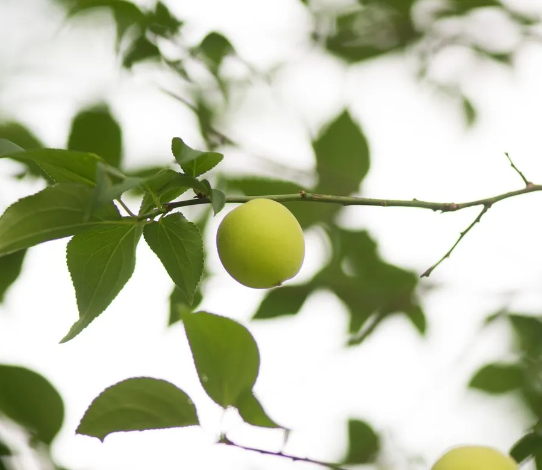

乔木 · 植物界
梅花 Prunus mume

中国传统的十大名花之首，冬末春初先花后叶、傲霜斗雪，是文学与民俗中象征坚韧高洁的经典花木。
- 分类
- 门被子植物门纲木兰纲目蔷薇目科蔷薇科属李属
- 栖息环境
- 海拔 1500 米以下的山坡、庭院与公园，喜光耐寒耐旱
- 地理分布
- 中国西南部原产，长江流域以南广泛栽培，南北各地亦有种植
- 保护级别
- 暂无评估；中国未列入国家重点保护野生植物名录
物种志
梅花为落叶小乔木，高可达 10 m，树皮灰褐色、平滑；小枝绿色，常具枝刺。叶片卵形至椭圆形，先端渐尖，边缘具细锯齿。花期 2–3 月，先花后叶，花单生或 2 朵并生，花径 2–3 cm，花瓣 5 枚，有白、粉、红等色，芳香；核果近球形，成熟时黄色或绿黄色，果肉黏核。
梅花原产中国西南部，栽培历史逾三千年，中国南北各地广泛栽培，长江流域以南尤为常见，喜光、耐寒、耐旱，适宜深厚肥沃、排水良好的土壤。梅花是中国十大名花之首，与松、竹并称“岁寒三友”，与兰、竹、菊并称“四君子”；果实可制乌梅、梅干与梅酒，花可提取香精、入药。梅花品种繁多，分真梅系、杏梅系等，武汉、南京等地以梅花闻名。
形态与习性
- 株高可达 10 m，小枝绿色
- 花期2–3 月，先花后叶
- 果期5–6 月，核果黄色
- 光照喜光，不耐长期荫蔽
- 水分耐旱，怕积水
- 主要用途观赏名花、乌梅与梅酒、花提取香精
趣味知识
- 梅花在冬末春初先花后叶，傲霜斗雪，是“岁寒三友”之一。
- 梅花与兰、竹、菊并称“四君子”，在中国文化中象征高洁坚韧。
- 梅的果实可制乌梅、梅干与梅酒，花可提取香精并入药。